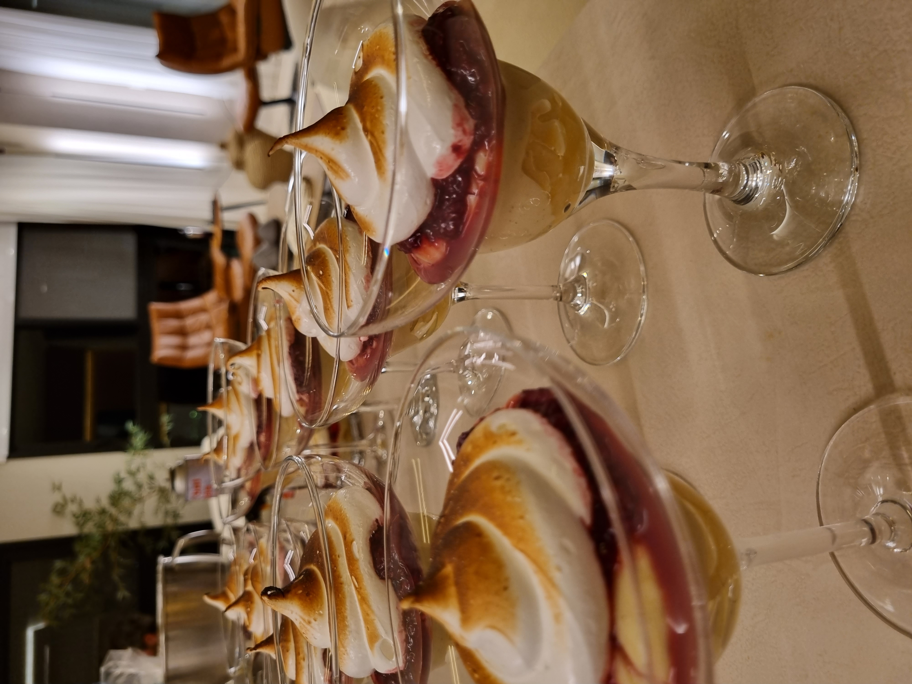
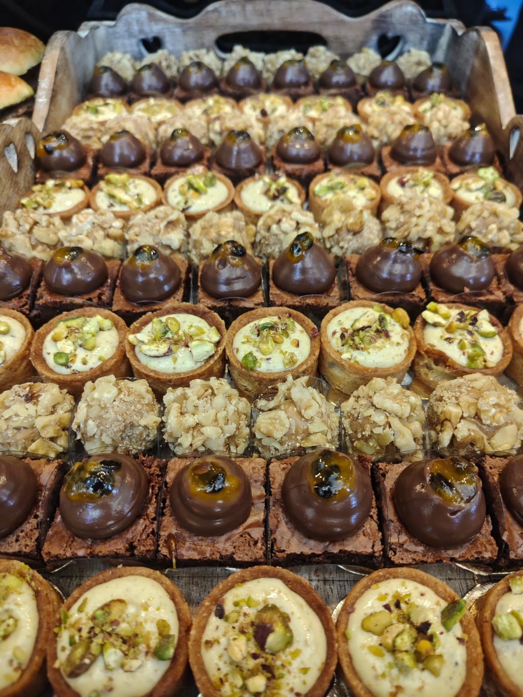
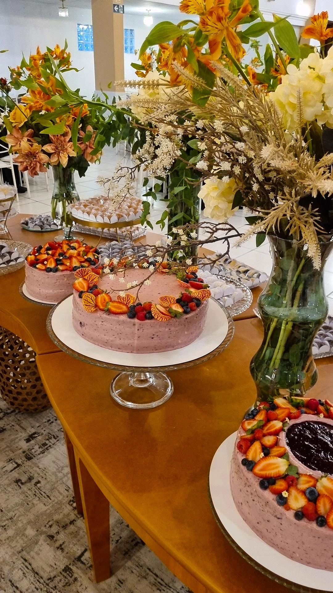
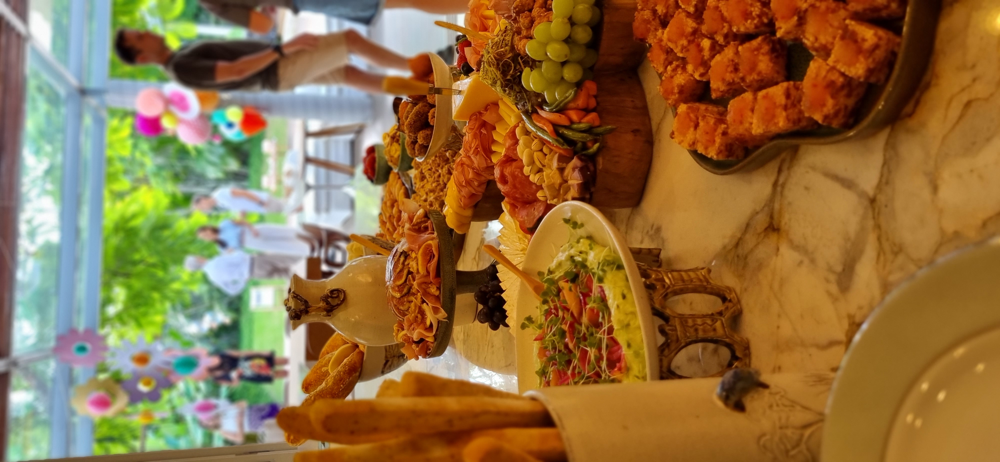
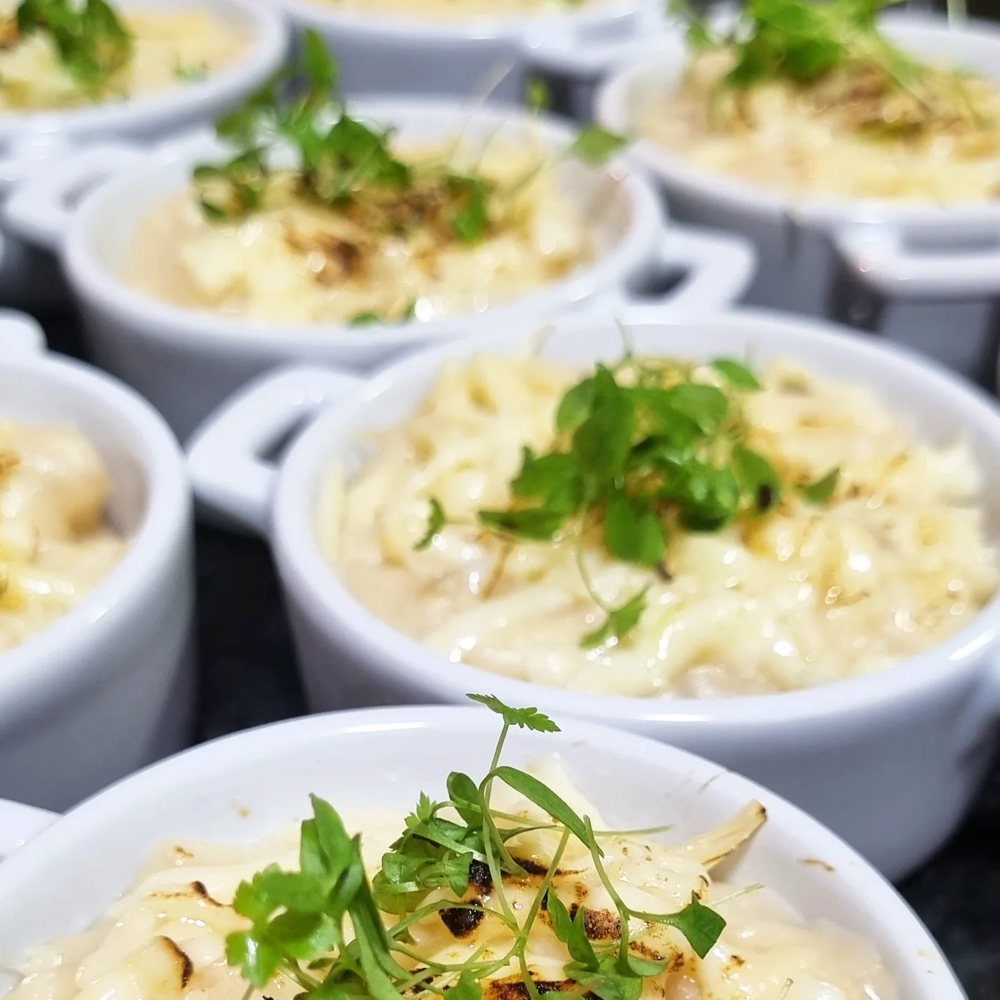
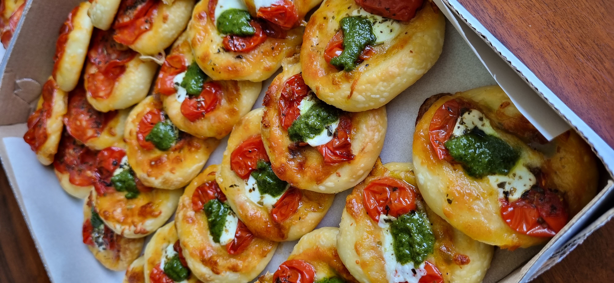

Gastronomia autoral para eventos que merecem ser lembrados.
Buffet especializado em eventos corporativos, casamentos, aniversários, chá de bebê e experiências exclusivas de Personal Chef.
Solicite um orçamentoQuem Somos
Fundada em 2016, a Sal de Flor - Cozinha Criativa nasceu com o propósito de transformar cada evento em uma experiência gastronômica única, unindo sabor, criatividade e excelência em cada detalhe.
Ao longo dos anos, tivemos o privilégio de realizar centenas de eventos na Grande Florianópolis, além de atender clientes no Rio Grande do Sul e em São Paulo, sempre oferecendo um serviço personalizado, ingredientes de alta qualidade e uma experiência memorável para cada cliente.
Nosso compromisso é proporcionar momentos especiais por meio da gastronomia, valorizando o atendimento próximo, a apresentação impecável dos pratos e o cuidado em cada etapa do evento.

Conheça nossas especialidades

Eventos Corporativos
Coffee Break Corporativo, buffet completo para empresas, reuniões, treinamentos, confraternizações, eventos institucionais.

Casamentos
Cardápios personalizados para tornar um dos dias mais importantes da sua vida ainda mais especial.

Aniversários
Buffets para festas infantis, aniversários adultos e comemorações familiares.

Chá de Bebê
Opções delicadas e criativas para celebrar esse momento tão especial.

Personal Chef
Experiência gastronômica exclusiva preparada no conforto da sua casa.

Sob Encomenda
Produção artesanal de bolos, doces finos, salgados gourmet e sobremesas para confraternizações, presentes e celebrações especiais.
Vamos transformar o seu evento em uma experiência inesquecível?
Cada celebração é única, e acreditamos que o buffet deve refletir essa exclusividade. Conte-nos como você imagina o seu evento e nossa equipe terá o prazer de desenvolver uma proposta personalizada, pensada especialmente para tornar esse momento memorável. Mais do que servir pratos, criamos conexões à mesa.
Fale com nossa equipe